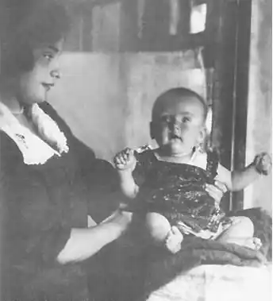

Народилася 30.10.1908 р. в Умані в родині сторожа синагоги. У 1922 р. втекла з мандрівним цирком, закохавшись в італійця, приборкувача тигрів, і стала виступати разом з ним. У 1925 р. кидає цирк, з’являється в Умані та дебютує віршами в уманській окружній газеті. Того ж року вступає до місцевої філії "Плуга" та одружується з журналістом і прозаїком Онопрієм Турганом. У 1926 р. обоє переїхали до столиці, де Раїса навчалася в ІНО.
Поетеса вславилася не тільки своїми еротичними віршами, але й бурхливими любовними романами, які викликали скандал за скандалом. У Києві вона закохалася у Володимира Сосюру під час його виступу і поїхала за ним до Харкова. Однак дружина Сосюри вигнала її. Опісля у неї був роман з Валер’яном Поліщуком та багатьма іншими відомими письменниками.
Перша поетична збірка Троянкер "Повінь" (1928) мала присвяту Онопрію Тургану, а друга – "Горизонт" (1930) уже була присвячена "коханому Іллі Садоф’єву" – пролетарському поетові, який перекладав її вірші російською. Незабаром Садоф’єв став її чоловіком, вони рік живуть у Харкові, а відтак їдуть до Ленінграда. Троянкер працює в заводській багатотиражці "Новая заря". Проте сімейне життя не складається і у 1935 р., коли в Москві і Ленінграді арештували кількох українських літераторів, тікає до Мурманська. Там працює відповідальним секретарем газети "Полярная правда", у якій опублікувала понад 100 віршів. У 1942 р. з’явилася її російськомовна збірка "Суровая лирика". 29.12.1945 р. Раїса Троянкер померла в Мурманську. Дочка — журналістка Олена Онуфріївна Турган. Внучка — акторка, журналістка, фотограф Олександра Олександрівна Турган.